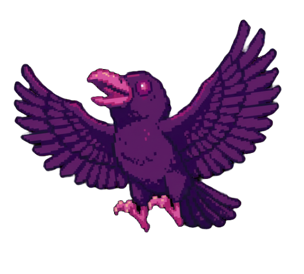
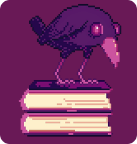
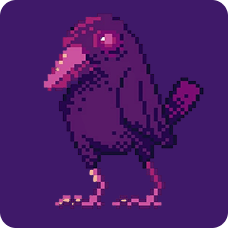
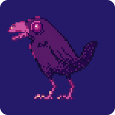
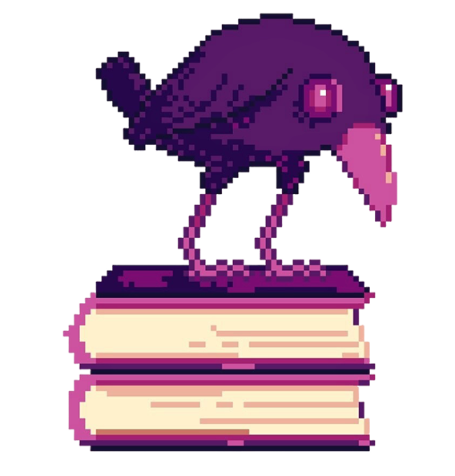
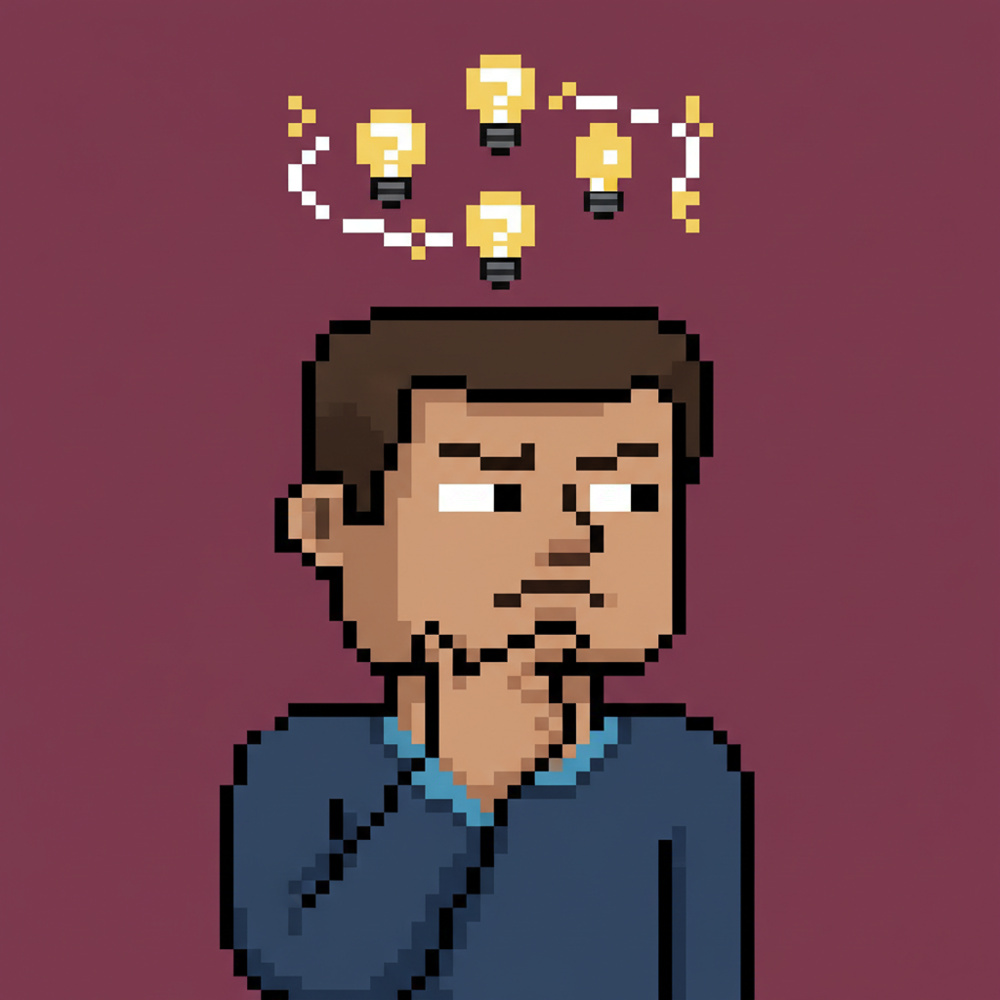
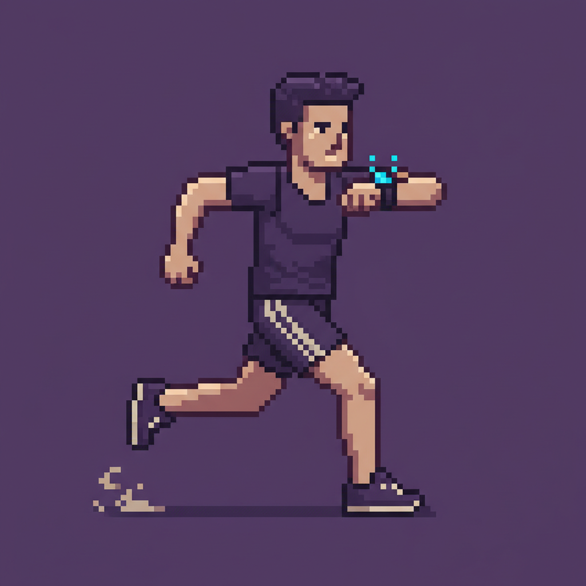
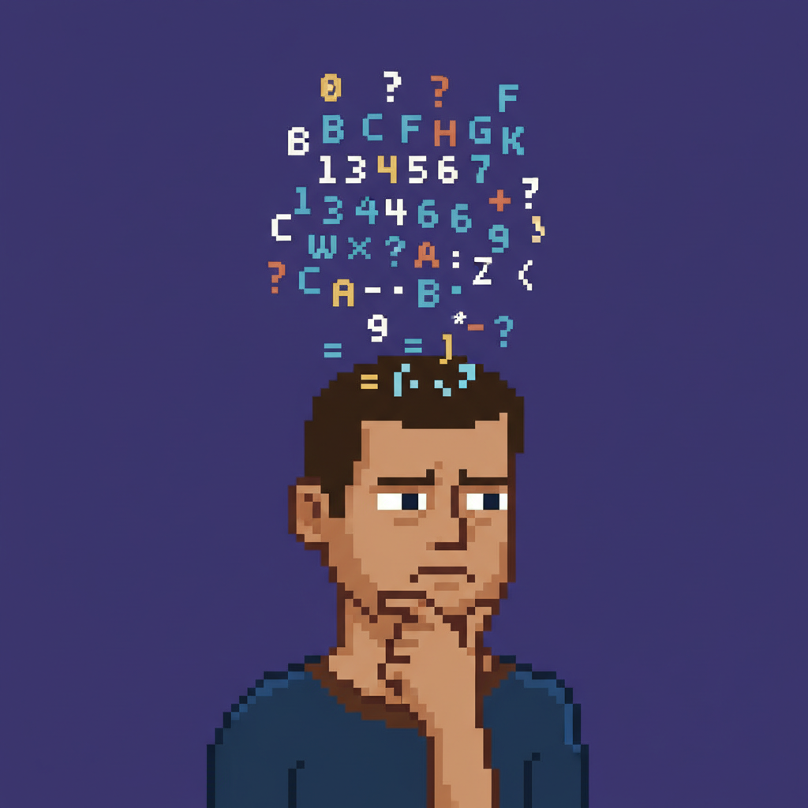

Binário não é difícil.
Você só nunca
praticou do jeito certo.
Uma ferramenta rápida de revisão para estudantes que
querem dominar conversão binária sem complicação.

E se fosse mais simples do que parece?
Tudo o que você precisa entender cabe em três passos.

Cada posição vale uma
potência de 2
Da direita para a esquerda:
1, 2, 4, 8, 16, 32...

Só conte onde tem 1
Ignore os zeros.
Some apenas os valores onde aparece 1.

Some e pronto
A soma final é o número decimal.
Teste agora
Converta o número ao lado para decimal.
Você pode tentar quantas vezes quiser.

Entender é bom. Praticar é
melhor.
Simples o suficiente para usar todos os dias. E eficaz
o bastante para fazer diferença na prova.
Errou? Corrige na hora.
Aprendizado acontece no ajuste.
Poucos minutos por dia são suficientes
para consolidar o conteúdo.
Estude onde estiver, no seu ritmo.
O que essa abordagem combate?
Desafios comuns no aprendizado técnico.

Bloqueio Cognitivo
Conteúdos parecem mais difíceis do que realmente são.

Falta de Tempo
Pequenos intervalos podem se tornar momentos produtivos.

Esquecimento Rápido
Repetição ativa fortalece a
retenção.